Willkommen bei meinem Reisetagebuch
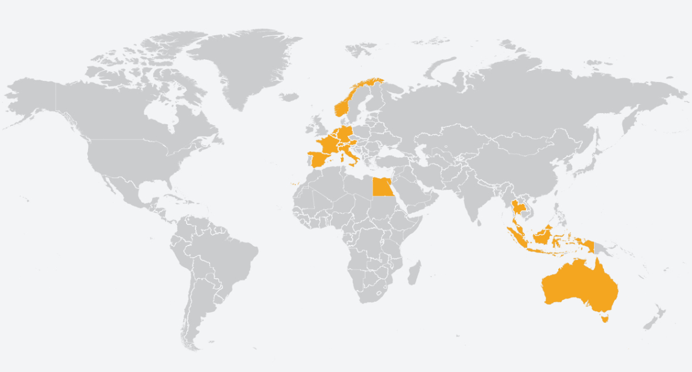2022 Australien
🇦🇺 Sydney – Sightseeing und Strandleben
Meine Reise begann in Sydney, einer pulsierenden Metropole, die für ihre ikonischen Sehenswürdigkeiten wie das Sydney Opera House und die Harbour Bridge bekannt ist. Neben den kulturellen Highlights genoss ich entspannte Stunden an den Stränden. Der berühmte Bondi Beach bot nicht nur tolle Wellen, sondern auch eine lebendige Atmosphäre. Etwas ruhiger ging es am Balmoral Beach zu, der mit seinem klaren Wasser und den schattigen Picknickplätzen ideal zum Entspannen war.


🌊 Byron Bay – Surferparadies
Weiter ging es nach Byron Bay, einem charmanten Küstenort, der als Mekka für Surfer gilt. Hier wagte ich mich selbst aufs Brett und erlebte das Gefühl, von den Wellen getragen zu werden. Die entspannte Atmosphäre und die atemberaubenden Sonnenuntergänge machten den Aufenthalt unvergesslich.
 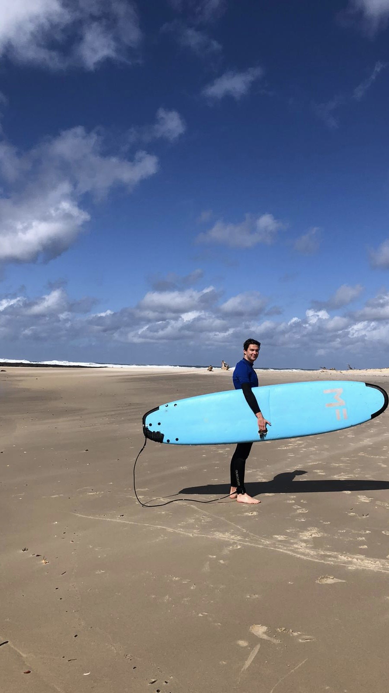
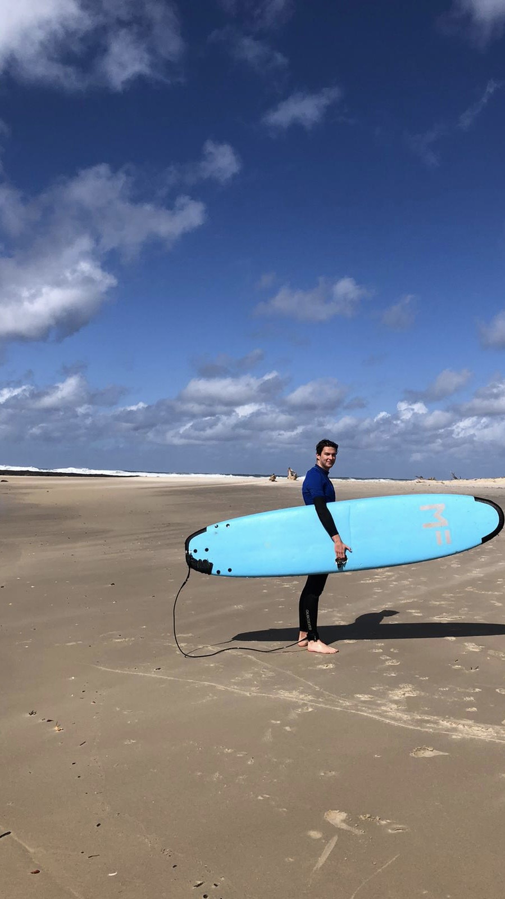
🏙️ Brisbane und Moreton Island – Stadt trifft Natur
In Brisbane erkundete ich die lebendige Innenstadt mit ihren zahlreichen Cafés und Parks. Ein besonderes Highlight war der Ausflug nach Moreton Island. Dort schnorchelte ich zwischen den berühmten Tangalooma-Wracks und entdeckte eine faszinierende Unterwasserwelt. Die Kombination aus Abenteuer und Naturerlebnis war einfach perfekt.

🚉 Mackay – Kurzer Zwischenstopp
Mackay diente mir hauptsächlich als Durchreiseort. Dennoch nutzte ich die Gelegenheit für einen Spaziergang entlang der Uferpromenade und genoss die entspannte Atmosphäre der Stadt.

🏞️ Townsville – Tropisches Flair
In Townsville spürte ich das tropische Klima und die Nähe zum Great Barrier Reef. Obwohl mein Aufenthalt kurz war, beeindruckte mich die Kombination aus Stadtleben und Natur. Ein nächstes Mal würde ich gerne mehr Zeit hier verbringen, um beispielsweise Magnetic Island zu erkunden.
🏖️ Airlie Beach – Tor zu den Whitsundays
Airlie Beach war der perfekte Ort, um die Seele baumeln zu lassen. Der künstlich angelegte Lagoon-Pool im Zentrum lud zum Schwimmen ein, und die entspannte Stimmung des Ortes war ansteckend. Von hier aus startete ich meinen Bootstrip zu den Whitsunday Islands.

⛵ Whitsunday Islands – Schnorcheln im Paradies
Die Whitsunday Islands waren ein absolutes Highlight meiner Reise. Ich unternahm einen Bootsausflug, bei dem ich an den traumhaften Stränden entspannte und beim Schnorcheln die farbenfrohe Unterwasserwelt des Great Barrier Reefs bestaunte. Besonders beeindruckend war der Whitehaven Beach mit seinem strahlend weißen Sand.


🤿 Cairns – Tauchsafari am Great Barrier Reef
Den krönenden Abschluss meiner Reise bildete eine viertägige Tauchsafari ab Cairns. Nach einem Tag Theorie und Pooltraining ging es für drei Tage hinaus aufs offene Meer. Dort tauchte ich an verschiedenen Spots des Great Barrier Reefs und erlebte die faszinierende Vielfalt der Meeresbewohner hautnah. Ein unvergessliches Erlebnis, das meine Reise perfekt abrundete.
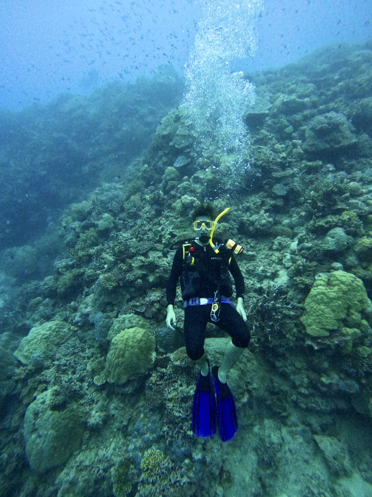
2023 Ägypten
Kairo – Geschichte hautnah und Düfte der Pharaonen
Meine Reise nach Ägypten begann in der geschichtsträchtigen Hauptstadt Kairo – eine Stadt voller Kontraste und unzähliger kultureller Schätze.
Natürlich durfte ein Besuch bei den Pyramiden von Gizeh und der Sphinx nicht fehlen. Diese über 4.000 Jahre alten Bauwerke zählen zu den sieben Weltwundern der Antike und gehören zum UNESCO-Weltkulturerbe. Der Anblick dieser gigantischen Monumente war beeindruckend und beinahe unwirklich.


Im Ägyptischen Museum konnte ich zahlreiche Fundstücke aus der Zeit der Pharaonen bestaunen – darunter auch die berühmte goldene Totenmaske des Tutanchamun. Die Sammlung bietet einen einzigartigen Einblick in das Leben, den Glauben und die Kunstfertigkeit des alten Ägyptens.

Ein besonders spannendes Erlebnis war der Besuch einer traditionellen Parfümmanufaktur. Dort lernte ich, wie ätherische Öle aus Pflanzen wie Lotus, Papyrus oder Jasmin destilliert werden – eine Kunst, die schon im alten Ägypten praktiziert wurde. Die Düfte hatten nicht nur kosmetische, sondern auch spirituelle und medizinische Bedeutung.


Marsa Alam – Tauchen im Roten Meer
Nach dem Trubel von Kairo reiste ich weiter nach Marsa Alam, einem ruhigeren Ort am Roten Meer. Die Region ist bekannt für ihre intakten Korallenriffe, das kristallklare Wasser und die außergewöhnliche Unterwasserwelt.
Ich unternahm mehrere Tauchgänge und konnte dabei Meeresschildkröten, bunte Rifffische und mit etwas Glück sogar einen Delfin beobachten. Das Rote Meer ist für seine Artenvielfalt und gute Sichtweiten bei Tauchgängen weltberühmt.
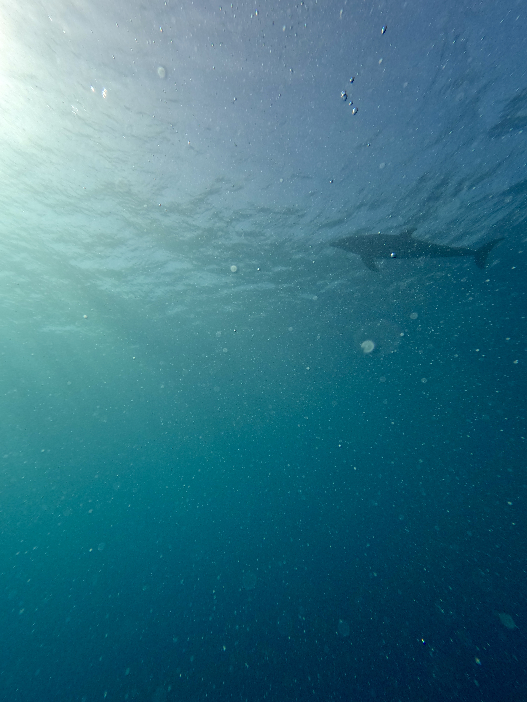

Eine weitere für mich spezielle Erfahrung war das Höhlen- und Canyontauchen. Wir fuhren mit einem kleinen Bus raus in die Wüste, montierten unser Equipment und sind vom Strand aus ins Wasser gelaufen. Bei ca. 1.50 Meter Wassertiefe tauchten wir ab und auf einmal tat sich ein Loch mit etwa 2 Meter Durchmesser unter uns auf. Wir tauchten hinein und gelangten in einen Canyon. Im Canyon drin gab es mehrere Höhlen durch die wir hindurchtauchten. Da es eine Strömung ins offene Meer rausgab, musste man fast nicht schwimmen. Auf dem Rückweg dafür mussten wir uns an einer Leine entlang zurück ziehen, da die Strömung zum Teil so stark war.
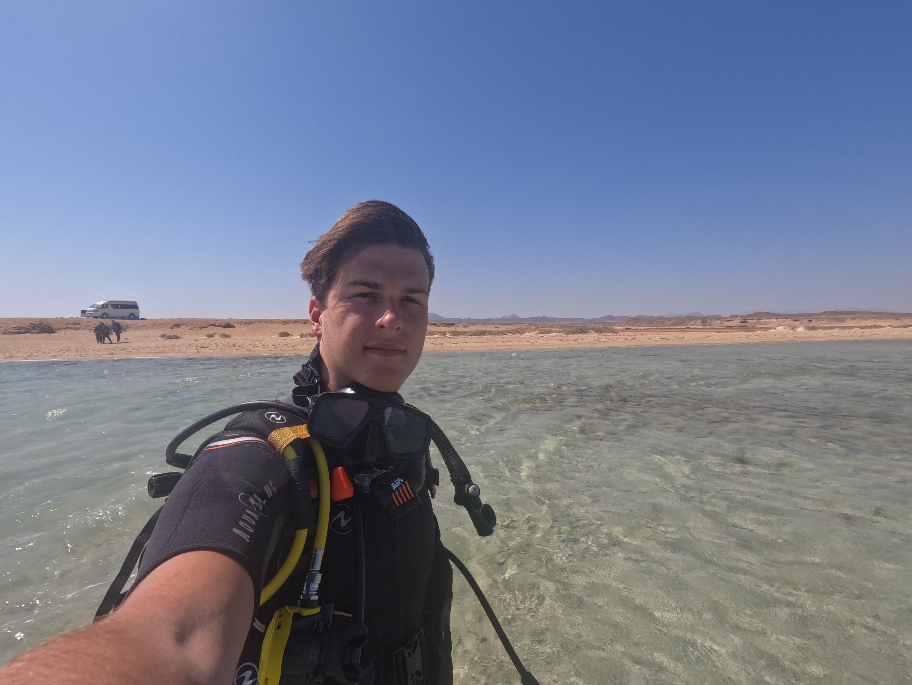
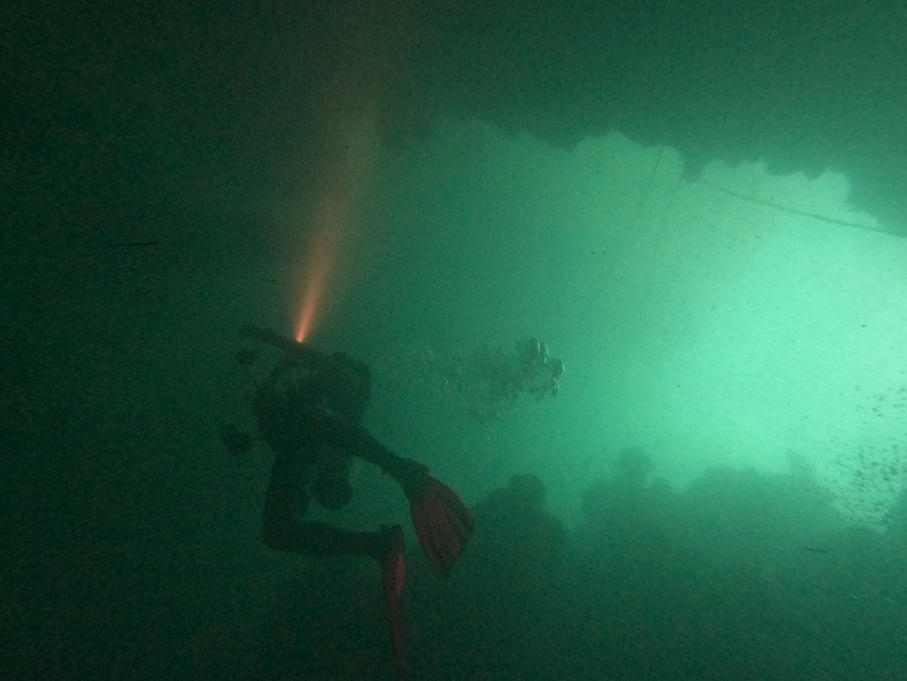
Auch an Land hatte Marsa Alam viel zu bieten. Die Abu Dabbab Bucht ist besonders beliebt zum Schnorcheln, da sie flach ins Meer abfällt und reich an Meereslebewesen ist. Die langen, ruhigen Strände boten perfekte Erholung nach den aufregenden Tauchabenteuern.


Die Mischung aus spannender Unterwasserwelt und völliger Ruhe an Land machte Marsa Alam für mich zu einem der schönsten Orte meiner Reise.

2024 Norwegen
Tromsø – Das Tor zur Arktis
Meine Reise durch Nordnorwegen begann in Tromsø, einer Stadt nördlich des Polarkreises, die oft als „Tor zur Arktis“ bezeichnet wird. Umgeben von Fjorden, schneebedeckten Bergen und arktischer Wildnis, bietet Tromsø eine einzigartige Kombination aus urbanem Leben und wilder Natur.


Bei einem Rundgang durch die Stadt besuchte ich die moderne Eismeerkathedrale, deren Architektur an Eisberge erinnert, und spazierte durch das Zentrum mit seinen charmanten Holzhäusern. Besonders spannend war das Polarmuseum, das einen faszinierenden Einblick in die Geschichte der arktischen Expeditionen gibt.

An einem weiteren Tag nahm ich die Seilbahn hoch auf den Hausberg von Tromsø. Dort oben, machte ich eine kleine Rundwanderung. Es war sehr windig und nach einer Stunde machte ich mich an den Weg nach unten. Es gab von ganz oben nach ganz unten einen Steintreppenweg mit 1300 Treppenstufen.


Sommarøy – Nordlichter auf einer Insel aus Licht und Stille
Nach ein paar Tagen in Tromsø mietete ich ein Auto und fuhr Richtung Westen auf die Sommarøy-Inseln, eine kleine Inselgruppe, etwa 60 Kilometer von Tromsø entfernt. Sommarøy ist bekannt für seine hellen Sandstrände und türkisblaues Wasser – fast schon karibisch, wäre da nicht die kalte Luft und das raue, nordische Licht.
 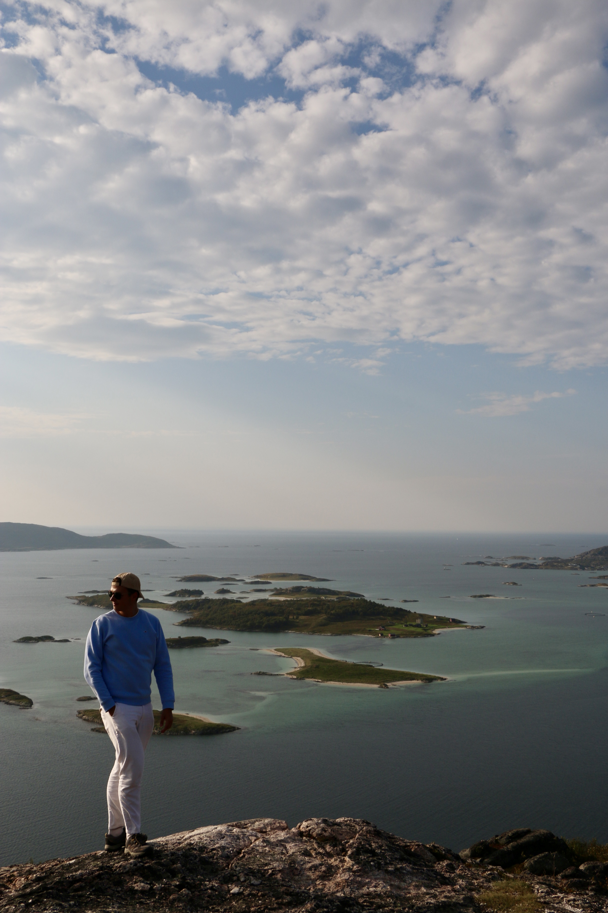
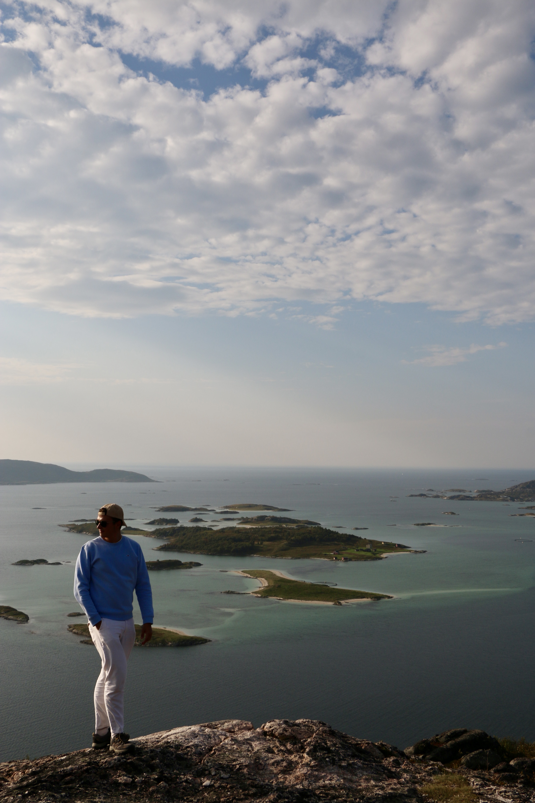
In der Nacht erlebten wir eines der spektakulärsten Naturschauspiele meines Lebens: die Nordlichter. Grünes, flackerndes Licht tanzte über den Himmel und tauchte die stille Landschaft in ein surreales Leuchten. Die Abgeschiedenheit der Insel, fernab von Lichtverschmutzung, machte die Aurora borealis besonders intensiv.


Senja – Norwegens wilde Schönheit und Wanderung auf den Segla
Von Sommarøy aus setzte ich meine Reise fort zur Insel Senja, Norwegens zweitgrößter Insel. Sie ist weniger touristisch als die Lofoten, steht ihnen landschaftlich aber in nichts nach: schroffe Küsten, tiefe Fjorde, alpine Gipfel und malerische Fischerdörfer.
Das Highlight auf Senja war für mich die Wanderung auf den Segla, einen markanten Gipfel, der fast senkrecht ins Meer abfällt. Die Wanderung ist mittelschwer, dauerte etwa 4 Stunden hin und zurück, und bietet oben eine spektakuläre Aussicht auf den Mefjord und die umliegenden Bergketten. Der Blick vom Gipfel über das raue Nordmeer war atemberaubend und das Gefühl, es bis ganz nach oben geschafft zu haben, unbeschreiblich.

 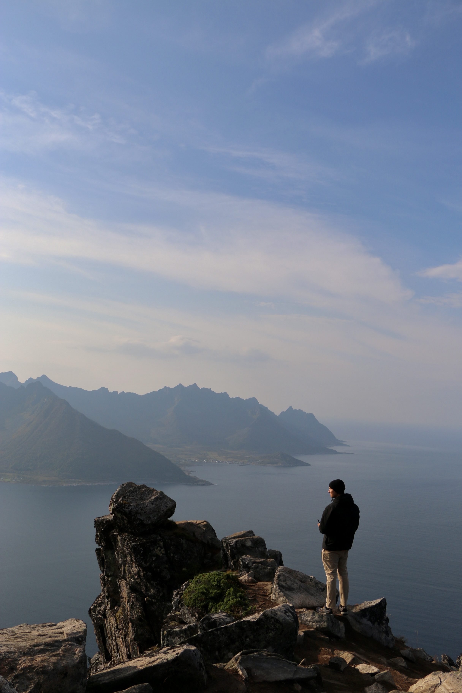
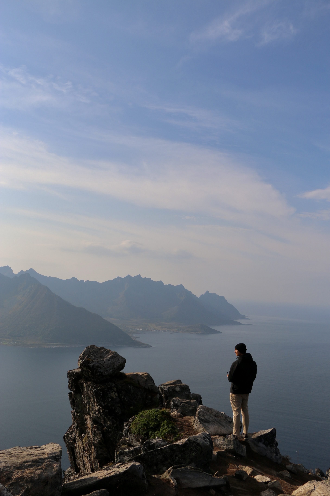
Auf dem Rückweg begegneten wir mehreren Rentieren, die frei über die Insel ziehen. Diese halbwilden Tiere sind ein vertrautes Bild in Nordnorwegen, besonders im Frühling und Herbst, wenn sie auf der Suche nach Nahrung wandern. Ihre Anwesenheit verlieh der Landschaft etwas Magisches.
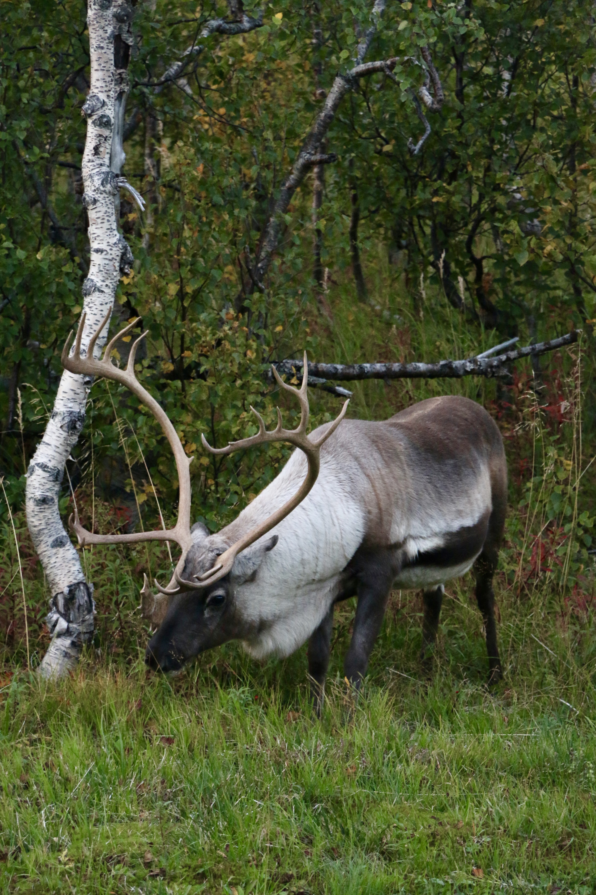
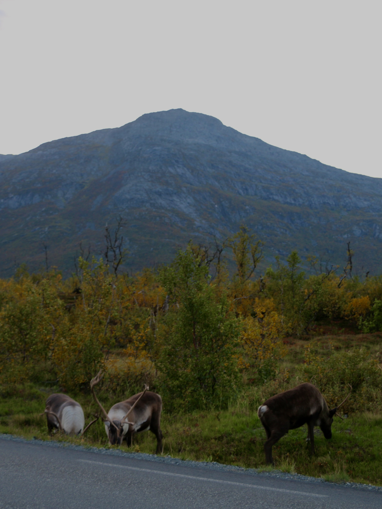